이렇게 골랐습니다
- 분석이 되게 — 각도마다 버전2와 버전4가 같이 들어 있어, 어느 각도가 많이 눌리는지와 같은 각도 안에서 어느 디자인이 나은지를 둘 다 볼 수 있습니다. 리뷰와 밥태기+영양은 버전2·버전4의 큰 제목이 같아서 디자인 차이만 비교됩니다.
- 고민 → 해결이 보이는 것 — 「채소·단백질 골고루 챙긴 아이반찬」 같은 무난한 서술, 「단백질은 달걀로」, 반찬 이름이 든 리뷰는 뺐습니다.
- 사진과 문구가 맞는 것 — 「고개를 돌리나요?」에 먹는 사진을 쓴 버전2 밥태기 B안은 뺐습니다.
- 주의 — 버전2 영양 3안은 모두 고민 → 해결 문장이 아니어서, 그중 오해 소지나 지적받은 문구가 없는 C안을 넣었습니다.
| 사이즈 | 플랫폼 |
|---|---|
| 1080×1080 (정사각) | 메타 · 네이버 · 구글 공통 |
| 1080×1350 (세로 4:5) | 메타 |
| 1080×1920 (세로 9:16) | 메타 (스토리 · 릴스) |
| 1200×628 (가로) | 네이버 · 구글 |
최종 10개 40장
1 · 리뷰 2개
버전2 · A안 — “육아가 훨씬 수월해졌어요” 버전4 A안과 같은 후기 문장 → 디자인만 비교됨


버전4 · A안 — “육아가 훨씬 수월해졌어요” 버전2 A안과 같은 후기 문장 → 디자인만 비교됨

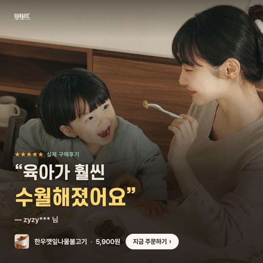

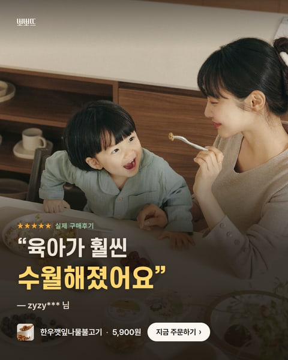

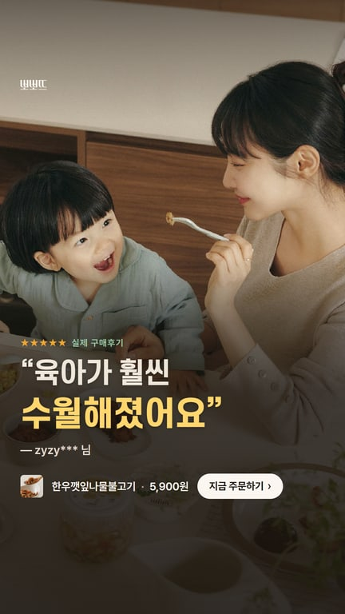

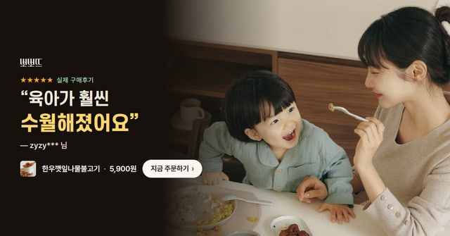
2 · 밥태기 2개
버전2 · A안 — 밥태기 온 우리 아이도 잘 먹어요 의뢰 핵심 문구(밥태기 온 우리 아이도 잘 먹는다)


버전4 · A안 — 숟가락만 보면 고개를 돌리나요? → 이건 받아먹어요 대표님 좋은 예 「숟가락만 보면 고개를 돌리나요?」 + 해결

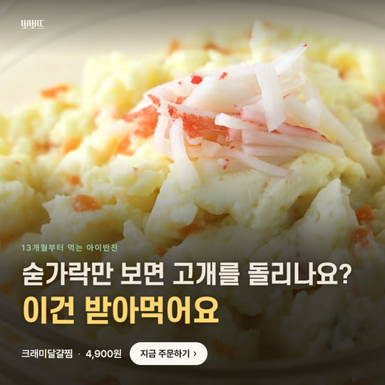

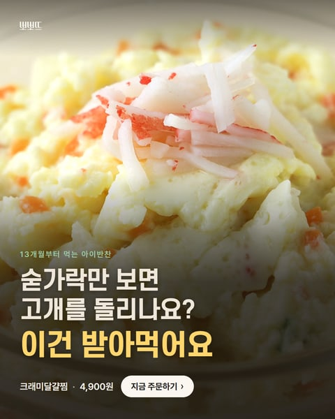

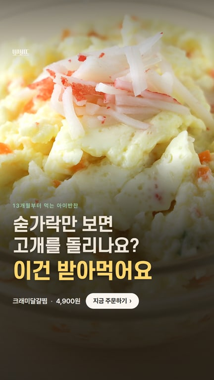

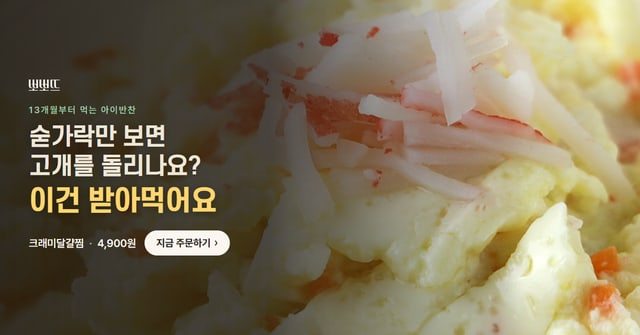
3 · 영양 2개
버전2 · C안 — 단백질에 채소까지, 아기 달걀찜 버전2 영양 3안 중 오해 소지·지적 문구가 없는 안(고민→해결 형태는 아님)


버전4 · A안 — 채소 골고루 먹이기 힘드시죠? → 한 그릇에 다 담았어요 대표님 예시 문구 그대로

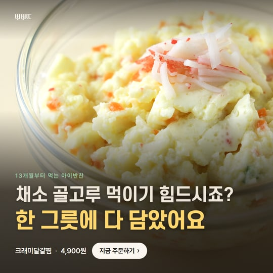

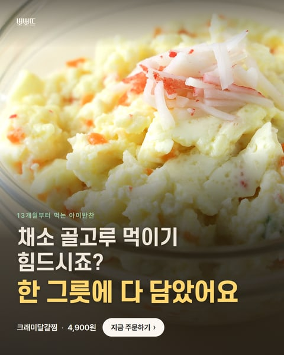

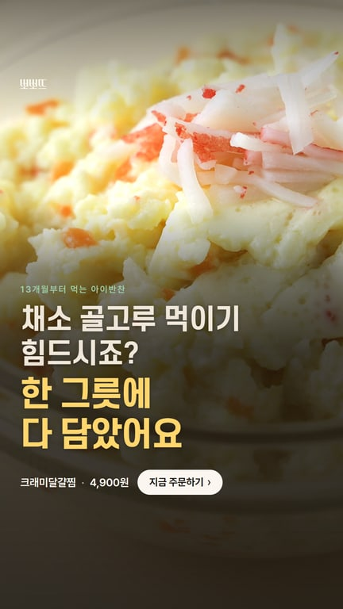

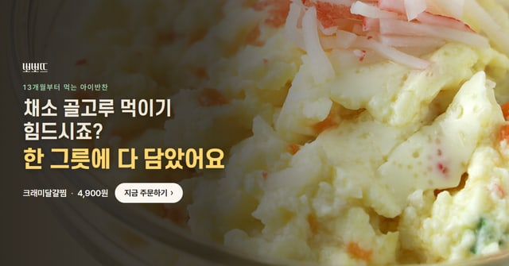
4 · 밥태기 + 영양 4개
버전2 · B안 — 숟가락 거부하던 아이도 잘 먹는 단백질 반찬 버전4 A안과 같은 문구 → 디자인만 비교됨(대표님 좋은 예)


버전4 · A안 — 숟가락 거부하던 아이도 → 잘 먹는 단백질 반찬 버전2 B안과 같은 문구 → 디자인만 비교됨(대표님 좋은 예)

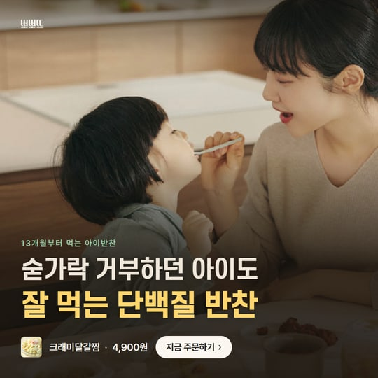

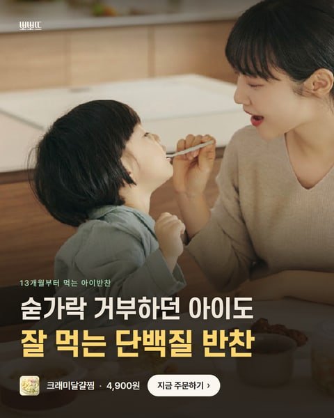

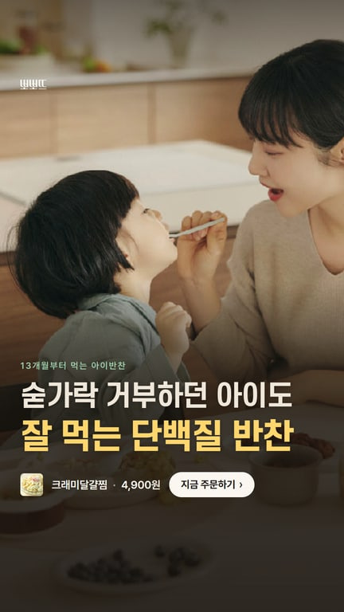

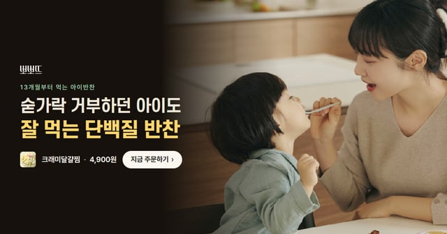
버전2 · A안 — 밥태기에도 잘 먹고, 영양까지 추가분(강한 각도): 밥태기·영양 둘 다


버전4 · C안 — 밥은 거부, 영양은 걱정? → 술술 넘어가는 단백질·채소 추가분(강한 각도): 밥태기·영양 고민 → 해결

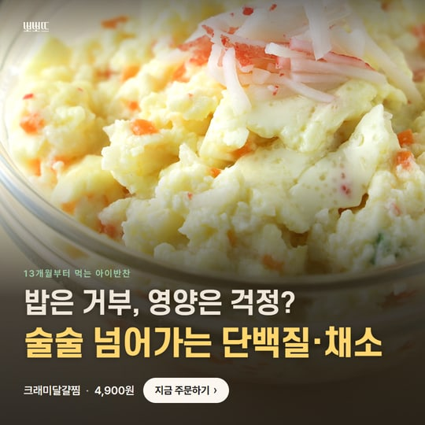

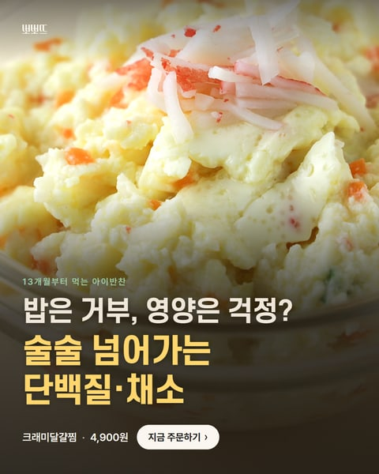

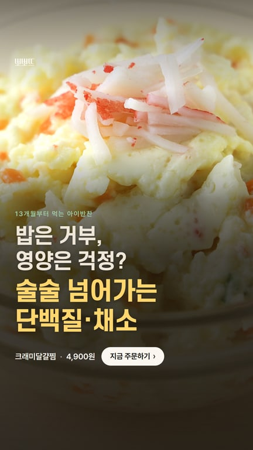

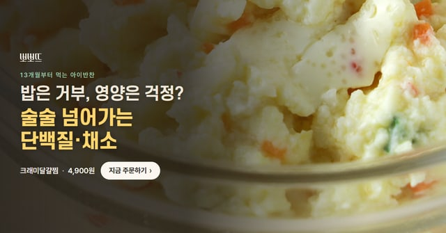